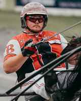

The trainer
Meet Scott
Harness racing runs deep in the Betts family. Scott's grandfather trained and drove Standardbreds, and his father was a veterinarian who worked on them, so he grew up around the sport.
Read Scott's storyHome of 2018 Meadows Horse of the Year Phoenix Warrior N. Standardbreds trained at The Meadows and raced at Northfield Park and beyond.
Meet the HorsesWatch ReplaysUpdated automatically every morning from TrackMaster race charts.
| Date | Horse | Track | Race | Finish | Time | Driver | |
|---|---|---|---|---|---|---|---|
| Oct 17, 2026 | Ready Set Goo | Shenandoah Downs | 9 | Scratched | Chart | ||
| Oct 16, 2026 | Ella Jo | Northfield Park | 11 | 1st | 1:55.1 | Samuel D Widger | Chart |
| Oct 16, 2026 | Three Way Action | The Meadows | 7 | Scratched | Chart | ||
| Oct 14, 2026 | Fight To Theend | The Meadows | 3 | Scratched | Chart | ||
| Oct 9, 2026 | Ahtohallan | The Meadows | 14 | 5th | 1:54.3 | Aaron E Merriman | Chart |
| Oct 9, 2026 | Punchin Preacher | The Meadows | 10 | 7th | 1:55.1 | W M Wilder | Chart |
| Oct 9, 2026 | Three Way Action | The Meadows | 15 | 7th | 1:52.4 | Case A Bateson | Chart |
| Oct 4, 2026 | Redwhite N Goo | Northfield Park | 13 | 1st | 1:54.1 | Daniel N Noble | Chart |
Entries for the coming days.
No entries posted right now. Check back soon.

Harness racing runs deep in the Betts family. Scott's grandfather trained and drove Standardbreds, and his father was a veterinarian who worked on them, so he grew up around the sport.
Read Scott's storyInterested in owning a share of a racehorse, or sending us a horse to train?